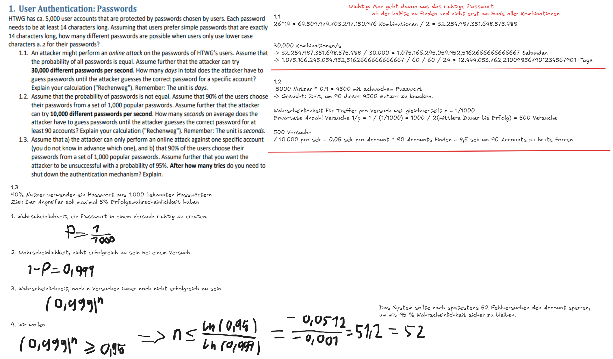
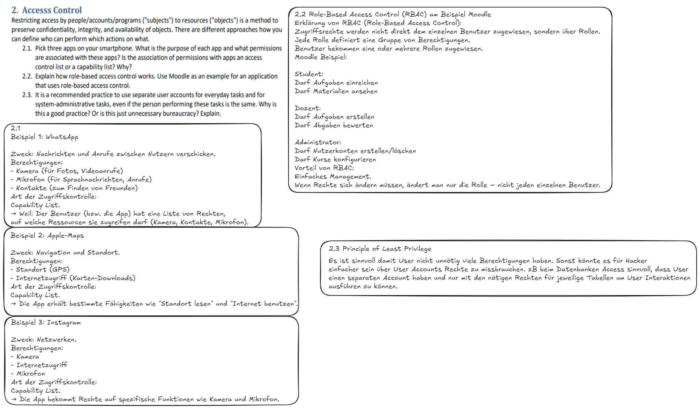

1. User Authentication: Passwords¶
Worum geht's?
→ Nutzer authentifizieren sich typischerweise mit Passwörtern. Damit ein Passwort sicher ist, muss es schwer zu erraten sein.
Wichtige Konzepte:
Passwortstärke¶
-
Anzahl möglicher Kombinationen bestimmt, wie schwer ein Passwort zu erraten ist.
-
Formel: $$ \text{Anzahl der möglichen Passwörter} = (\text{Anzahl der möglichen Zeichen})^{\text{Länge des Passworts}} $$
- Beispiel: Nur Kleinbuchstaben (26 Zeichen), Passwortlänge = \(14 → 26^{14}\)Kombinationen.
Brute-Force-Angriff¶
- Der Angreifer probiert systematisch alle Möglichkeiten durch.
- Geschwindigkeit: z.B. 30.000 Versuche pro Sekunde.
- Rechenweg:
- Gesamte Passwortanzahl berechnen.
- Teilen durch die Rate (Versuche/Sekunde).
- Umrechnen auf Minuten/Stunden/Tage.
Merke:
- Online-Angriffe sind meistens langsam (wegen Verzögerungen).
- Offline-Angriffe (z.B. gestohlene Passwort-Datenbanken) können Milliarden Versuche pro Sekunde machen.
Beliebte Passwörter und "Schwache" Nutzer¶
- Viele Nutzer wählen sehr einfache oder beliebte Passwörter ("123456", "password").
- 90 % der Nutzer nehmen vielleicht eines von 1.000 häufigen Passwörtern.
- Dann wird die Wahrscheinlichkeit für den Angreifer viel besser, weil er zuerst nur die 1.000 Varianten probieren muss.
Erfolgswahrscheinlichkeit und Lockout¶
- Manche Systeme sperren Accounts, wenn zu viele Fehlversuche auftreten.
- Typische Schutzmaßnahme: Nach 5 falschen Passwörtern → Account-Sperre.

2. Access Control¶
Worum geht's?
→ Systeme müssen regeln, wer auf welche Ressourcen zugreifen darf.
Wichtige Konzepte:
Access Control Models¶
- Discretionary Access Control (DAC): Benutzer kann selbst Rechte vergeben (z.B. Windows-Filesharing).
- Mandatory Access Control (MAC): Strenge Regeln vom System vorgegeben (z.B. Militärische Systeme).
- Role-Based Access Control (RBAC): Zugriff erfolgt über Rollen.
Access Control List (ACL) vs. Capability List¶
-
ACL:
Objekt-zentriert. Jedes Objekt hat eine Liste, die beschreibt, wer es benutzen darf.
Beispiel: Datei „Geheim.pdf“ →- Max: Lesen
- Anna: Lesen + Schreiben
-
Capability List:
Subjekt-zentriert. Jeder Benutzer hat eine Liste, welche Objekte er benutzen darf.
Beispiel: Benutzer Max →- Lesen: Geheim.pdf
- Schreiben: Hausarbeit.docx Apps auf dem Smartphone:
- Apps fragen Berechtigungen (Kamera, Mikrofon, Standort).
- Diese Berechtigungen sind in Android/iOS meist Capability-basiert.
| Kategorie | Access Control List (ACL) | Capability List |
|---|---|---|
| Objektzentriert | Das Objekt (z.B. Datei, Kamera) hat eine Liste, wer es nutzen darf. | |
| Subjektzentriert | Das Subjekt (App oder Benutzer) hat eine Liste, was es nutzen darf. |
Rolle-basierte Zugriffskontrolle (RBAC)¶
- Nutzer bekommen Rollen zugewiesen.
- Rollen besitzen bestimmte Berechtigungen.
- Beispiel Moodle:
- Student → Aufgaben abgeben, Materialien lesen.
- Dozent → Aufgaben hochladen, Abgaben bewerten.
- Admin → Einstellungen ändern.
Vorteil:
- Einfacher, Benutzer zu verwalten → Änderungen nur an der Rolle nötig, nicht an jedem einzelnen Benutzer.
Trennung von Benutzer- und Admin-Accounts¶
- Warum zwei Accounts haben?
- Risiko minimieren: Weniger Rechte = weniger Schaden bei Angriffen.
- Tippfehler oder versehentliche Aktionen passieren im Alltag.
- Malware kann sich schwerer mit Adminrechten verbreiten.
Fazit:
→ Keine unnötige Bürokratie, sondern sinnvolle Risikominimierung!
Discretionary Access Control (DAC)¶
Kernidee:
- Der Besitzer eines Objekts (z.B. einer Datei) darf selbst entscheiden, wer darauf Zugriff bekommt.
- "Discretionary" heißt übersetzt etwa „nach eigenem Ermessen“.
- Flexible, benutzerfreundliche Kontrolle: Du selbst kannst anderen Leuten Rechte auf deine Sachen geben.
Beispiel:
- Du hast auf deinem Windows-PC ein Word-Dokument.
-
Du kannst selbst festlegen:
- Max darf es lesen.
- Lisa darf es lesen und bearbeiten.
- Anna darf gar nichts sehen.
Typische Systeme mit DAC:
- Windows NTFS-Dateisystem (über Datei-Eigenschaften → Sicherheit)
- Unix/Linux (Berechtigungen: lesen/schreiben/ausführen)
Vorteile:
- Sehr flexibel und benutzerfreundlich.
- Benutzer können eigene Ressourcen eigenständig verwalten.
Nachteile:
- Sicherheitsrisiko: Benutzer können versehentlich falsche Berechtigungen vergeben.
- Malware könnte Rechte übernehmen, wenn ein Benutzer unvorsichtig ist.
Mandatory Access Control (MAC)¶
Kernidee:
- Das System kontrolliert zentral, wer Zugriff auf was hat — nicht der einzelne Benutzer!
- Regeln sind festgelegt und nicht veränderbar durch Benutzer.
- Häufig genutzt in Hochsicherheitsumgebungen (Militär, Regierung).
Beispiel:
-
Dateien werden mit einer „Geheimhaltungsstufe“ versehen: "Geheim", "Streng Geheim", "Öffentlich".
-
Benutzer bekommen ebenfalls eine Klassifizierung:
- Anna → darf "Streng Geheim" lesen
- Max → darf nur "Geheim" lesen
-
Das System entscheidet automatisch, ob Anna oder Max auf eine Datei zugreifen darf, basierend auf diesen Stufen.
- Benutzer können die Berechtigungen NICHT ändern, auch wenn sie Besitzer der Datei sind.
Typische Systeme mit MAC:
- SELinux (Security-Enhanced Linux)
- Windows mit Active Directory Richtlinien (teilweise)
Vorteile:
- Hohe Sicherheit, weil Benutzer keine Fehler machen können.
- Strikte Trennung von Informationen.
Nachteile:
- Unflexibel: Benutzer können nicht schnell Rechte ändern.
- Komplex in der Verwaltung.

3. Application Whitelisting (WDAC)¶
WDAC (Windows Defender Application Control)¶
Grundidee:¶
Nur genehmigte Software darf laufen
→ Alles andere wird blockiert – auch Schadsoftware, unbekannte Programme oder manipulierte Dateien.
Anders als Antivirenprogramme, die böse Software erkennen wollen, verhindert Whitelisting von vornherein, dass überhaupt irgendetwas Unerlaubtes startet.
- Whitelisting: Standardmäßig alles blockieren, was nicht explizit erlaubt ist.
Arten von WDAC-Regeln¶
WDAC kann verschiedene Kriterien verwenden, um zu entscheiden, was erlaubt ist:
1. Dateipfad-Regeln¶
- Programme, die an bestimmten Orten gespeichert sind, sind erlaubt.
- Beispiel: Nur Programme im Ordner C:\Program Files oder C:\Windows dürfen laufen.
- Problem: Angreifer könnten Dateien in erlaubte Ordner kopieren → daher nicht allein sicher.
2. Datei-Hash-Regeln¶
- Ein Hashwert (ein digitaler Fingerabdruck) wird von der Datei erstellt.
- Nur Dateien mit einem ganz bestimmten Hash dürfen ausgeführt werden.
- Sehr sicher, aber:
- Wenn ein Update kommt (z.B. neue Version eines Programms), ändert sich der Hash → neue Hashes müssen eingepflegt werden.
3. Signatur-/Zertifikatsregeln¶
- Nur Programme, die von einem vertrauenswürdigen Herausgeber digital signiert wurden, sind erlaubt.
- Beispiel:
- Microsoft signiert Windows-Updates.
- Adobe signiert Acrobat Reader.
- Sehr praktisch, weil Programme aktualisiert werden können, ohne dass sich Regeln ständig ändern müssen.
4. Intelligent Security Graph Regeln (optional)¶
- WDAC kann zusätzlich Online-Sicherheitsdatenbanken abfragen ("Microsoft Intelligent Security Graph") und Entscheidungen basierend auf Cloud-Intelligenz treffen.
WDAC Einschränkungen¶
Code-Ausführung ist eingeschränkt¶
- Nur erlaubte Programme (laut Whitelist) dürfen neu gestartet oder geladen werden.
- Bedeutet:
- Neue Software ohne Erlaubnis? → Wird blockiert.
- Virus, der versucht, ein neues Programm zu starten? → Keine Chance.
Dateizugriffe (Lesen/Schreiben) sind NICHT eingeschränkt¶
- WDAC kümmert sich nicht darum, ob Dateien gelesen oder beschrieben werden.
- Beispiel:
- Ein Texteditor, der erlaubt ist, kann beliebige Dateien lesen oder speichern.
- Solange das Schreib-/Lesezugriffsrecht vom Betriebssystem (z.B. NTFS) erlaubt wird. Fazit:
- WDAC schützt vor Ausführung von Schadcode,
- aber nicht vor Datenlecks, wenn ein erlaubtes Programm missbraucht wird.
Audit Mode¶
Was ist das? - Der Audit Mode erlaubt, WDAC-Regeln nur zu simulieren: - Programme, die verboten wären, dürfen trotzdem laufen. - ABER: Verstöße werden geloggt und angezeigt.
Wofür nützlich? - Testen neuer Regeln, ohne das Risiko, das wichtige Software plötzlich blockiert wird. - Fehleranalyse: Was wäre geblockt worden? - Vorbereitung auf späteren "harten" Einsatz.
Typischer Ablauf: 1. Regeln erstellen. 2. WDAC im Audit Mode aktivieren. 3. Protokolle auswerten. 4. Regeln verbessern. 5. Erst dann: WDAC Enforcement Mode aktivieren (harte Blockierung).
Debugging und Logs¶
- WDAC Ereignisse werden im Windows-Event-Log gespeichert:
- „Microsoft-Windows-CodeIntegrity/Operational“
- Fehler und erfolgreiche Prüfungen werden dort angezeigt.
- Wichtig für:
- Troubleshooting
- Sicherstellen, dass Policies wirklich greifen